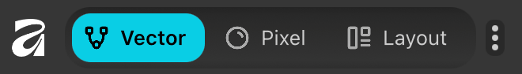

| File type | Adobe | Affinity Studio | Open source |
|---|---|---|---|
| Bitmaps | Photoshop | Pixel mode | GIMP |
| Vectors | Illustrator | Vector mode | Inkscape |
| Layout | InDesign | Layout mode | Scribus |
| Cost | $$$ Monthly Creative Cloud subscription |
Free | Free |
| Notes | Industry standard | Free | Free, but rough learning curve |
Graphics editors
Alternatives to Adobe programs
For exercise 10, mini-project 2, and your final project, you’ll create plots in R, export them as PDFs, and then edit, enhance, and lay out those PDFs using some sort of graphics editor.
In the past, I’ve had students use Adobe Illustrator for this, since GSU provided free student access to Adobe Creative Cloud, which includes Illustrator. The most common Creative Cloud programs people use for data visualization-related work are:
- Photoshop: edit photos and other bitmap images
- Illustrator: edit vector images
- InDesign: lay out text and images for books, magazines, brochures, posters, and all other printed things
However, GSU no longer provides off-campus access to Adobe software. If you’re faculty or staff, you can still access Creative Cloud for free; if you’re a student you have to use an on-campus computer lab.
This is sad because knowing how to use programs like Illustrator is incredibly valuable. Even if you never touch R again after this class, the graphic design programs included in Creative Cloud are industry-standard and used literally everywhere, and knowing how to use them is an important skill!
There are some alternative options though.
Creative Cloud as a student
You can use the whole Creative Cloud Suite for $20/month as a student, and they have a 14-day free trial. Creative Cloud is a subscription service, so you can subscribe on and off as often as you want.
Affinity Studio
Affinity is a smaller rival to Adobe and they have their own (free!) program for graphic design-related tasks named Affinity Studio. Affinity Studio has three modes that are general equivalents of the core Adobe programs:
- Vector mode = Illustrator
- Pixel mode = Photoshop
- Layout mode = InDesign

Open source alternatives
The open source community has created free programs that are rough equivalents of these core Adobe programs too:
These are all free and they work on macOS and Windows (and Linux if you’re into that), but they can be a little lot rough around the edges and tricky to work with. Adobe, Affinity, and other companies have full time developers focused on making good user interfaces and experiences; these open source clones do not. You can make the same kind of output with GIMP, Inkscape, and Scribus that you can with Adobe Creative Cloud and Affinity Studio, but there’s a bit of an extra learning curve (and a lot of bumps along the way).
But you can’t beat free.